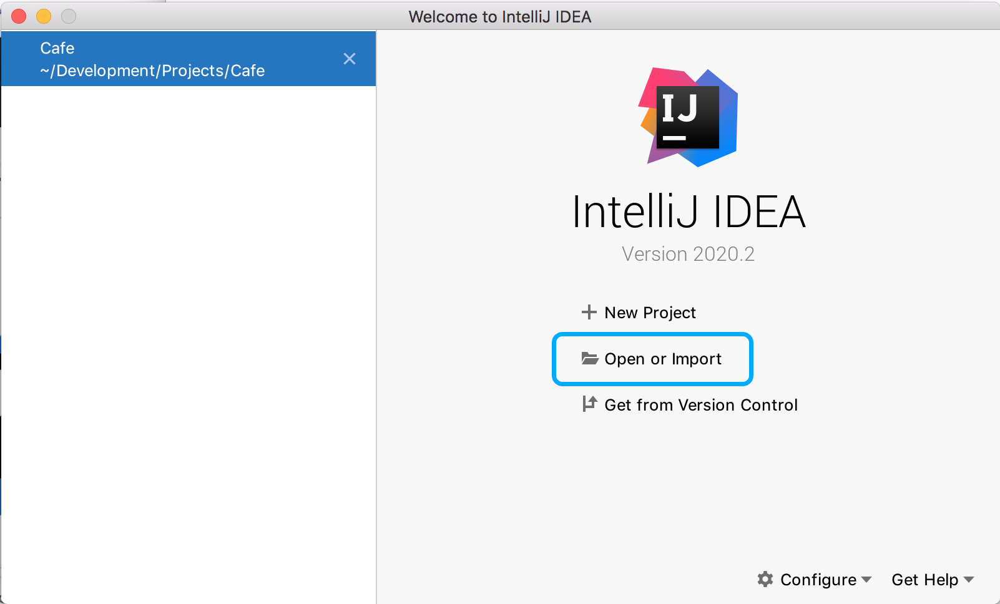
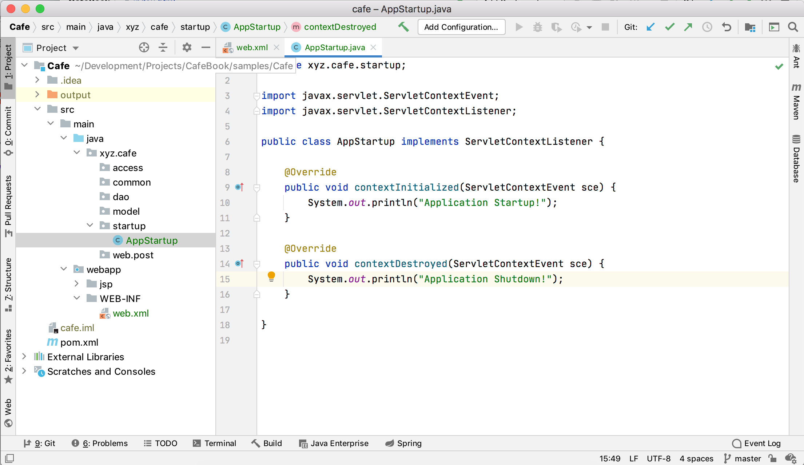
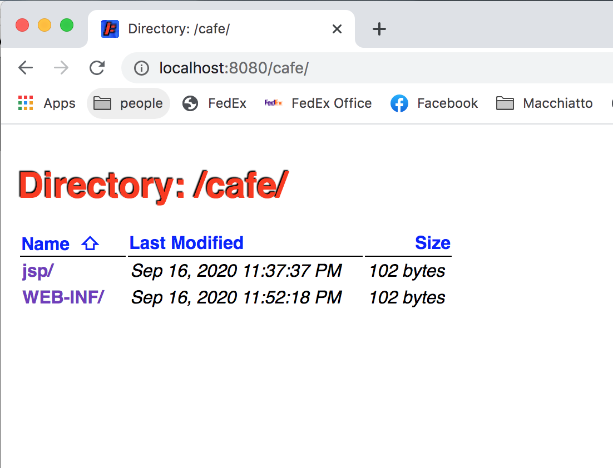

Cafe
A Simple J2ee Project
Java Web Application Sample
This will walk you through step by step and we will create a simple blog application running locally on your development machine running h2 and Jetty. We will not dive too far into details, rather give you a 10,000 foot view of J2ee architecture.
What is J2ee
J2ee is short for Java Web Application Development. It is enterprise ready! It is modular, secular and beautiful! We hope you enjoy it as much as we do. Without further adoo, let's go further... and build our Cafe
We hope you are either running Linux, Windows with GitBash or Mac.
First things first...
We need to install OpenJdk which will be our Java binary distribution and Maven our build tool. Installing simply means downloading the binaries and adding them to your system path. Here is how it is done.
Browse to https://adoptopenjdk.net and select a OpenJdk to download. Download & unpack...
Next we need to download Maven. Maven is our build tool, it will find & download project dependencies for us and compile the project when deploying or running locally. Download then open up your .bashrc it is located in the home directory, if it's not there you will need to create it. ~/ means root or home directory. Open up a command prompt and type on a mac:
open ~/.bashrc
Our final .bashrc should look something like:
#!/bin/bash export JAVA_HOME=/Library/Java/JavaVirtualMachines/adoptopenjdk-8-openj9.jdk/Contents/Home export PATH=$PATH:$JAVA_HOME/bin export MAVEN_HOME=/Users/mcroteau/Development/Tools/apache-maven-3.6.3 export PATH=$PATH:$MAVEN_HOME/bin
Now lets "Source" which means execute our .bashrc so that java commands and maven commands are available! In the same command prompt type:
source ~/.bashrc
We will be working within the same command prompt for most of the time. We will need to open up another terminal/command prompt in the future in addition to this one.
We should now be able to type java and mvn commands!
java -version
Should output something like the following
openjdk version "1.8.0_265" OpenJDK Runtime Environment (build 1.8.0_265-b01) Eclipse OpenJ9 VM (build openj9-0.21.0, JRE 1.8.0 Mac OS X amd64-64-Bit Compressed References 20200728_646 (JIT enabled, AOT enabled) OpenJ9 - 34cf4c075 OMR - 113e54219 JCL - c82ff0c20f based on jdk8u265-b01)
Do the same for Maven, type:
mvn --version
It should output something like:
Apache Maven 3.6.3 (cecedd343002696d0abb50b32b541b8a6ba2883f) Maven home: /Users/mcroteau/Development/Tools/maven-current Java version: 1.8.0_265, vendor: Eclipse OpenJ9, runtime: /Library/Java/JavaVirtualMachines/adoptopenjdk-8-openj9.jdk/Contents/Home/jre Default locale: en_US, platform encoding: UTF-8 OS name: "mac os x", version: "10.11.6", arch: "x86_64", family: "mac"
Congratulations! You are on your way... let's get started.
Project Structure
We need to create our project. Create all of the following directories so that it looks like:
Cafe/ Cafe/src/main/java/xyz/cafe/access Cafe/src/main/java/xyz/cafe/common Cafe/src/main/java/xyz/cafe/dao Cafe/src/main/java/xyz/cafe/model Cafe/src/main/java/xyz/cafe/startup Cafe/src/main/java/xyz/cafe/web/post Cafe/src/main/webapp/jsp/post Cafe/src/main/WEB-INF
The directories or folders above are for supporting Servlets, Data Access Objects and Models.
Please make sure all folders/directories are created.
If you are developer then you are probably familiar with this project setup. If not, this is the cleanest most awesome way to configure your project. The pattern is called MVC which stands for Model View Controller. We have the web folder for controllers/servlets, the model folder for our models, and our jsp folder for our views.
Do you have an IDE already?
What is an IDE? An IDE is an Integrated Development Environment, basically a tool to use in order to develop. Often times developers will use plain text editors, this will work fine but you will not have package or directory management, code assist and a lot fun features that a full fledged IDE has. We recommend either Eclipse or during this tutorial, I am using IntelliJ. https://www.jetbrains.com/idea/ They have a community addition, which is Free.

Hold off before importing the project until you've created what is called pom.xml. The reason we are holding off until importing into our new IDE is because the IDE will configure the project within using the pom.xml
Use a simple text editor for this and create a file within the root Cafe directory, name it pom.xml. The pom.xml will be our main project configuration file. We will list our project dependencies within it. We will also configure a build & run plugin to test our project.
We are going to start from scratch so paste the following into that new pom.xml file:
<project xmlns="http://maven.apache.org/POM/4.0.0"
xmlns:xsi="http://www.w3.org/2001/XMLSchema-instance"
xsi:schemaLocation="http://maven.apache.org/POM/4.0.0 http://maven.apache.org/maven-v4_0_0.xsd">
<modelVersion>4.0.0</modelVersion>
<groupId>xyz.cafe</groupId>
<artifactId>cafe</artifactId>
<version>0.1</version>
<packaging>war</packaging>
<dependencies>
<dependency>
<groupId>jstl</groupId>
<artifactId>jstl</artifactId>
<version>1.2</version>
</dependency>
<dependency>
<groupId>javax.servlet</groupId>
<artifactId>javax.servlet-api</artifactId>
<version>4.0.1</version>
</dependency>
<dependency>
<groupId>com.h2database</groupId>
<artifactId>h2</artifactId>
<version>1.4.200</version>
</dependency>
<dependency>
<groupId>opensymphony</groupId>
<artifactId>sitemesh</artifactId>
<version>2.4.2</version>
</dependency>
<dependency>
<groupId>io.github.mcroteau</groupId>
<artifactId>parakeet</artifactId>
<version>0.2</version>
</dependency>
</dependencies>
<build>
<defaultGoal>package</defaultGoal>
<directory>output</directory>
<outputDirectory>output/classes</outputDirectory>
<finalName>${project.artifactId}-${project.version}</finalName>
<sourceDirectory>src/main/java</sourceDirectory>
<plugins>
<plugin>
<artifactId>maven-compiler-plugin</artifactId>
<version>3.5.1</version>
<configuration>
<source>1.8</source>
<target>1.8</target>
</configuration>
</plugin>
<plugin>
<groupId>org.eclipse.jetty</groupId>
<artifactId>jetty-maven-plugin</artifactId>
<version>9.4.20.v20190813</version>
<configuration>
<webApp>
<contextPath>/cafe</contextPath>
</webApp>
</configuration>
</plugin>
</plugins>
</build>
</project>
What we've done above is configured and told Maven to look for all the dependencies within the <dependencies/> element, where to look for our Java source files, what version of Java to compile under and configured the project to use Jetty to run it in development mode.
Now lets import the project into our IDE. In this example we will use IntelliJ. Open IntelliJ and click Open or Import. Locate the pom.xml and double click the file. This will bring up prompt asking whether or not you want to Open as Project. Click Open as Project. IntelliJ will import the project for you.
Now let's configure the project as a Web project by adding a web.xml. Copy and paste the following:
<?xml version="1.0" encoding="UTF-8"?>
<web-app xmlns="http://xmlns.jcp.org/xml/ns/javaee"
xmlns:xsi="http://www.w3.org/2001/XMLSchema-instance"
xsi:schemaLocation="http://xmlns.jcp.org/xml/ns/javaee
http://xmlns.jcp.org/xml/ns/javaee/web-app_3_1.xsd" version="3.1">
<listener>
<listener-class>
xyz.cafe.startup.AppStartup
</listener-class>
</listener>
</web-app>
Copy and paste above into the file:
src/main/webapp/WEB-INF/web.xml
Okay, so what have we done here? We have configured our project to look for what are called servlets, filters, listeners and more. This web.xml is empty but we will populate it with lots of stuff later on.
What is a Servlet? A servlet is a Java class that represents a web route. A request gets passed to this route that is defined as you saw above. Here is an example.. there are plenty above but let's pick one out and go into detail.
The standard for defining a Servlet
<servlet>
<servlet-name>CreateServlet</servlet-name>
<servlet-class>xyz.cafe.web.post.CreateServlet</servlet-class>
</servlet>
<servlet-mapping>
<servlet-name>CreateServlet</servlet-name>
<url-pattern>/create</url-pattern>
</servlet-mapping>
So we defined here in our project a Servlet that we named CreateServlet it will be located in the folder
src/main/java/xyz/cafe/web/postThe request will get passed to /create like below:
http://localhost:8080/cafe/create
What is a request? A request is a web request. Anytime you type in a browser bar and hit enter, that is called a Request.
We defined for the blog post the following:
- ListServlet : which will list the blog posts
- CreateServlet : displays a create blog post
- SaveServlet : saves a post
- UpdateServlet : allows us to update a post
- EditServlet : allowing us to edit our post
- DeleteServlet : to delete a post
Great! But...
We have no Servlets created and we haven't even run our project yet! Okay, let's create one and also while we are at it create the Java class that will be waiting for the project to start up.
Take another look at the web.xml. Track down the following.
<listener>
<listener-class>
xyz.cafe.startup.AppStartup
</listener-class>
</listener>
Within your web.xml you can define what are called application listeners. In this case we are defining a class that will listen for the startup event... thus the name AppStartup. So let's create that class.
src/main/java/xyz/cafe/startup/AppStartup.java
Copy and paste the following into that file. We will be updating it with more logic later on, but this will get us started.
package xyz.cafe.startup;
import javax.servlet.ServletContextEvent;
import javax.servlet.ServletContextListener;
public class AppStartup implements ServletContextListener {
@Override
public void contextInitialized(ServletContextEvent sce) {
//application startup
}
@Override
public void contextDestroyed(ServletContextEvent sce) {
//application shutdown
}
}
Now let's try something... let's run our project and see what happens. Just in case, this is what your project should look like at this point:
Let's start with the CreateServlet so we can run our newly created project and actually see something... geez.
Back to your IDE, in the directory
src/main/java/xyz/cafe/post/
create a Java class by right clicking on the post directory and selecting New -> Java Class. Or just create a new file and name it CreateServlet.java
/src/main/java/xyz/cafe/post/CreateServlet.java
Copy and the code below into your new Java class.
package xyz.cafe.web.post;
import javax.servlet.ServletException;
import javax.servlet.http.HttpServlet;
import javax.servlet.http.HttpServletRequest;
import javax.servlet.http.HttpServletResponse;
import java.io.IOException;
public class CreateServlet extends HttpServlet {
@Override
protected void doGet(HttpServletRequest req, HttpServletResponse resp) throws ServletException, IOException {
req.getRequestDispatcher("/jsp/post/create.jsp").forward(req, resp);
}
}
Notice the CreateServlet extends HttpServlet... this means that all the methods that are within HttpServlet are overrideable. There are three very important methods that you will at some point in time override if writing a J2ee application. doGet() doPost() and init()
Here we override doGet()
There is another important piece, notice the forward at the end, without the .forward(req, resp) you will see a blank screen.
req.getRequestDispatcher("/jsp/post/create.jsp").forward(req, resp);
So we have out first servlet, and it overrides a doGet() verb which means nothing is hidden, you can simply type in the servlet path, hit enter and browse to the servlet. We don't have a create.jsp yet. Let's create that. Create the create.jsp at:
src/main/webapp/jsp/post/create.jsp
Copy and past the following code within the create.jsp.
<%@ page contentType="text/html;charset=UTF-8" language="java" %>
<%@ taglib prefix="c" uri="http://java.sun.com/jsp/jstl/core" %>
<html>
<head>
<title>Cafe : Create Post</title>
</head>
<body>
<h1>Create Post</h1>
<c:if test="${not empty message}">
<p><c:out value="${message}"/></p>
</c:if>
<form action="${pageContext.request.contextPath}/save" method="post">
<label>Title</label>
<input type="text" name="title" placeholder="title"/>
<br/>
<label>Content</label>
<textarea name="content"></textarea>
<br/>
<br/>
<input type="submit" value="Save"/>
</form>
</body>
</html>
What is a Jsp? Jsp stands for Java Server Page.
It is the view in our Model, View, Controller setup.
Okay! We now have the basics for a Java web app. Let's run it!
Back to the terminal or command prompt. Make sure you're in the main Cafe directory. Type:
mvn jetty:run
You will see a bunch of output, this is logging. We won't go into that but if you want to learn more about logging checkout slf4j
So what did we do? We told Maven to compile the project and told Jetty to run it. Now open up a web browser and go to:
http://localhost:8080/cafe
You should see the following.
This is our start. We might not like this as our start obviously because this shows the basic standard packages but its not really what we are looking for with our blog application. We will change this soon. Go ahead now and lets browse to our first servlet, the CreateServlet at /create
http://localhost:8080/cafe/create
© OpenCafe